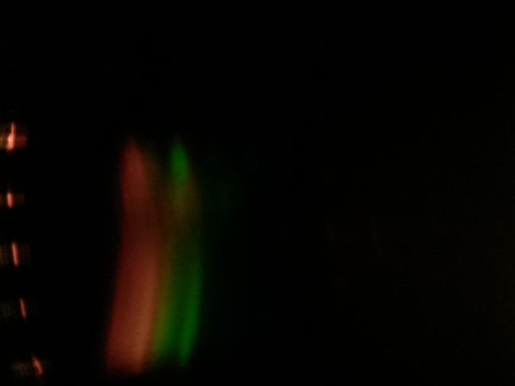
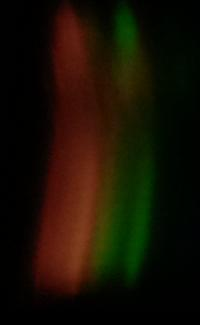
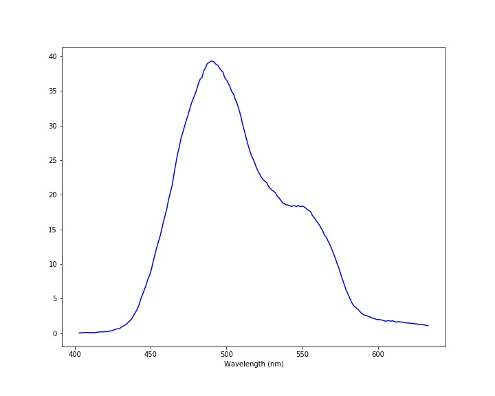

Experiment No. 4: Warm Light vs. Cool LightMeasurement taken on 20211210-021610Scientist: ArabellaLight source: LED Lamp Bulb Transmission sample: None Exposure: 10000000 µsec Before Experiment NotesSoft white LED, 2700 K. 900 lumens. In this experiment, I will compare this light vs. a cool light.After Experiment NotesThere is no blue seen, because it is a warm light. And it is less bright than the CFL because of the K. |
ImagesRaw imageProcessed imageSpectrum |
DataDownload data - spectrum-20211210-021610.csv |